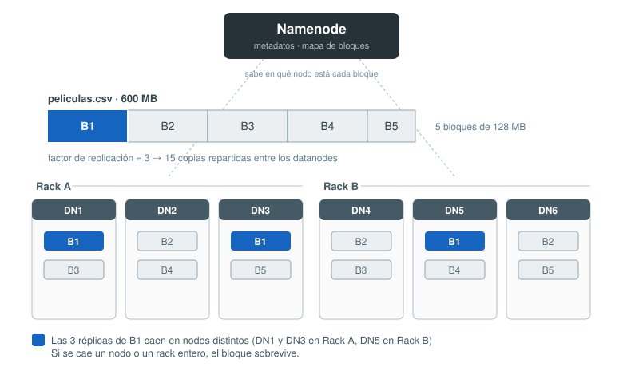
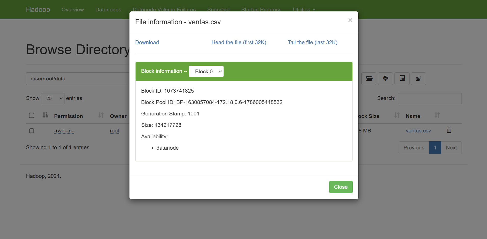
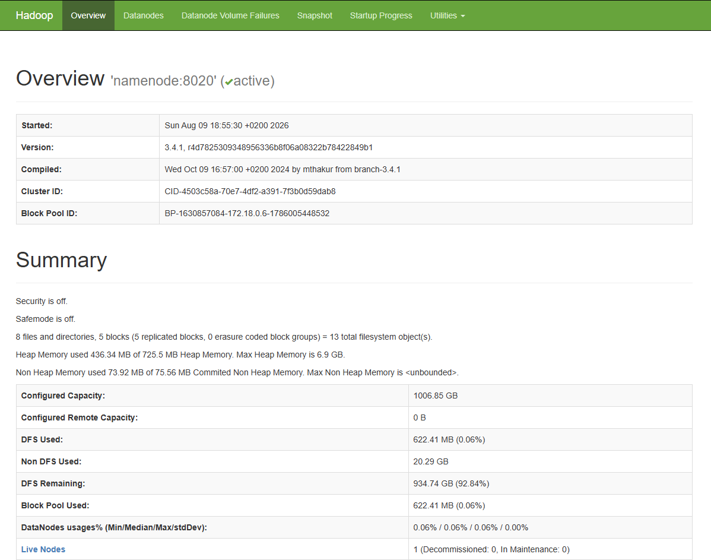
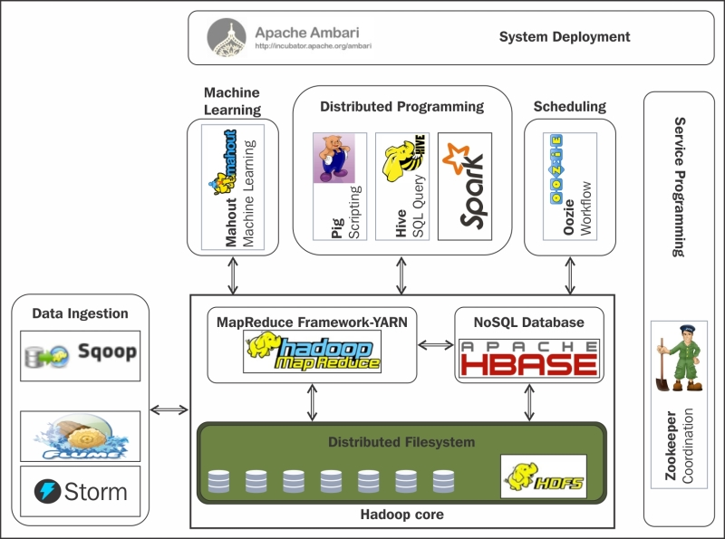
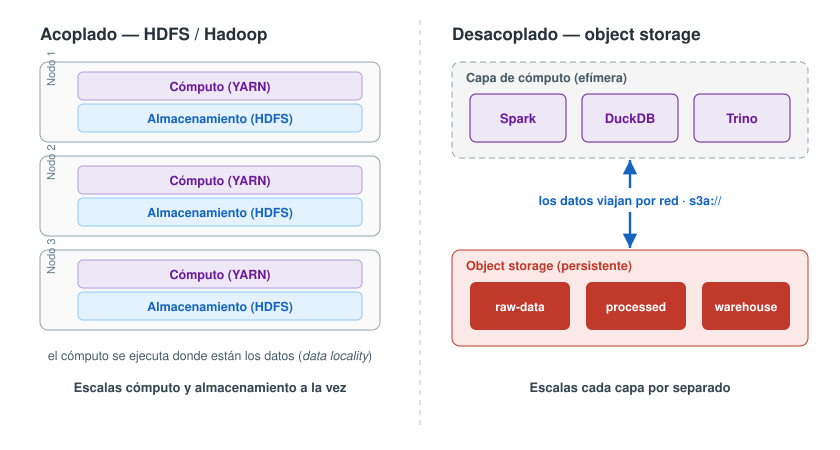
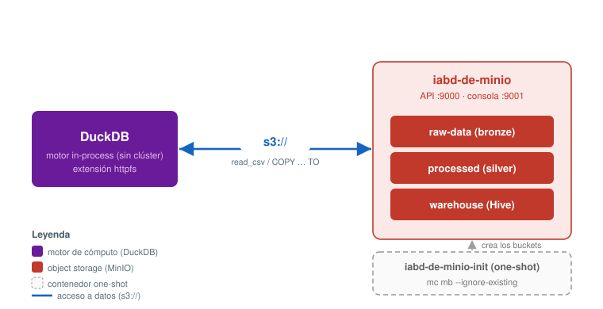
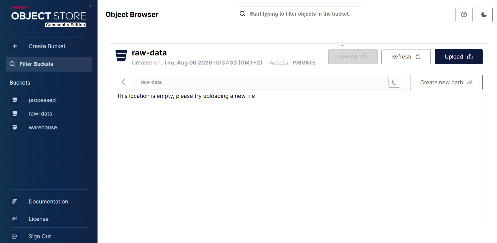
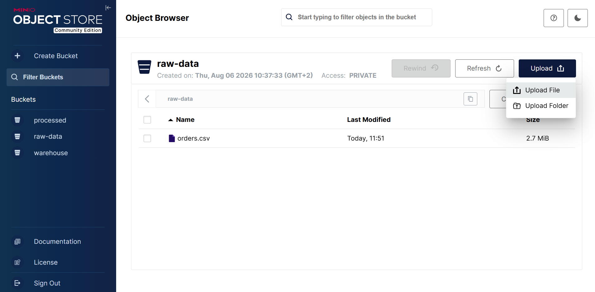

Changelog:
- Nueva creación — Agosto 2026
Almacenamiento distribuido¶
Hasta ahora hemos guardado nuestros datos en un disco: un .csv, un .parquet, una carpeta en /data. Funciona perfectamente… hasta que deja de funcionar. Cuando el volumen crece más allá de lo que cabe (o se puede leer) en una sola máquina, necesitamos repartir los datos entre muchas máquinas.
¿Por qué repartir los datos?¶
Imagina que tienes que leer 1 TB de datos desde un único disco duro. Un disco mecánico moderno sostiene una velocidad de lectura de unos 160 MB/s en el mejor de los casos. La cuenta es directa: 1 000 000 MB ÷ 160 MB/s ≈ 6250 s ≈ 1 h 45 min.
Casi dos horas solo para leer los datos, sin haber procesado todavía nada. Y esto para 1 TB: los datasets reales se miden en decenas o cientos de TB, cuando no en petabytes. La idea que lo cambió todo es tan simple como potente: si repartimos ese 1 TB entre 100 discos y leemos de todos a la vez, tardaremos aproximadamente 1 minuto en lugar de casi 2 horas. El cuello de botella no era la CPU, era el ancho de banda de lectura de un solo disco, y ese ancho de banda escala si añadimos discos y leemos en paralelo.
¿Y con un SSD rápido no se arregla?
En parte. Un NVMe puede rondar los 5 GB/s, así que ese 1 TB se leería en aproximadamente 3 minutos. Pero el argumento del volumen no se apoya solo en la velocidad:
- Capacidad: no podemos (ni interesa económicamente) meter un petabyte en una sola máquina.
- Procesamiento: aunque cupiera en disco, la RAM y la CPU de una máquina no dan para procesar un PB.
- Fiabilidad: una máquina es un único punto de fallo (SPOF = Single Point of Failure). Con un solo disco, si falla, lo pierdes todo.
Repartir los datos resuelve las tres cosas a la vez: más capacidad, más ancho de banda agregado y redundancia.
Ahora bien, repartir datos entre 100 máquinas crea dos problemas nuevos:
- Los fallos dejan de ser la excepción y pasan a ser la norma. Si un disco falla una vez cada varios años, con miles de discos tendrás fallos todas las semanas. Necesitamos que el sistema sobreviva a fallos sin perder datos.
- Combinar los trozos. Un fichero repartido entre 100 máquinas hay que poder leerlo (y procesarlo) como si fuera uno solo.
El primer problema lo resuelve la replicación; el segundo, un sistema de ficheros distribuido que abstrae el reparto. Justo lo que veremos a continuación.
HDFS¶
HDFS (Hadoop Distributed File System) fue la respuesta canónica a ese problema, inspirada en el paper del Google File System (2003). Su diseño encierra cuatro ideas que conviene tener grabadas, porque han sentado la base de todo el almacenamiento distribuido moderno, incluido el que usamos hoy en día sobre S3.
Bloques¶
En lugar de guardar cada fichero de un tirón, HDFS parte cada fichero en bloques de tamaño fijo (por defecto 128 MB) y reparte esos bloques entre los nodos del clúster. Un fichero de 600 MB se convierte en 5 bloques.
¿Por qué bloques tan grandes, si un disco normal trabaja con bloques de 4 KB? Porque el objetivo es leer secuencialmente ficheros enormes, no acceder a datos pequeños al azar. Con bloques grandes, el tiempo de posicionamiento del disco (seek) es despreciable frente al tiempo de transferencia: pasas casi todo el tiempo leyendo datos útiles, no buscando dónde están.
Replicación y tolerancia a fallos¶
Cada bloque se almacena varias veces en máquinas distintas. El número de copias es el factor de replicación, y por defecto es 3. Además, HDFS coloca las réplicas con cabeza: 2 en el mismo rack y 1 en otro rack diferente, de modo que ni la caída de un nodo ni la de un rack completo (por ejemplo, si se estropea su switch) provoquen pérdida de datos.

En HDFS, el fallo de hardware es la regla, no la excepción. Si un datanode deja de responder, el sistema detecta que a ciertos bloques les faltan copias y las re-replica automáticamente desde las réplicas supervivientes hasta recuperar el factor 3. Para detectar además la corrupción silenciosa (bits que se degradan en disco), cada bloque guarda una suma de verificación (CRC): al leer, se recalcula y se compara; si no coincide, ese bloque se descarta y se lee otra réplica.
Arquitectura: Namenode y Datanodes¶
Todo esto lo coordinan dos tipos de nodos:
- Namenode (maestro): guarda los metadatos, es decir, el árbol de directorios y el mapa de bloques (qué bloques componen cada fichero y en qué nodos están sus réplicas). Es el nodo al que se conecta el cliente para saber dónde leer o escribir. Nunca almacena ni transporta datos.
- Datanode (trabajador): almacena y sirve los bloques. Reporta periódicamente al Namenode qué bloques tiene y que sigue vivo (heartbeats).
El dato nunca pasa por el maestro
Un detalle clave del diseño: los bloques se transfieren directamente entre el cliente y los datanodes, nunca a través del namenode. El maestro solo dice "el bloque B1 está en DN1, DN3 y DN5"; a partir de ahí el cliente habla con el datanode más cercano. Gracias a esto el tráfico se reparte por todo el clúster y el sistema escala: el namenode no es un cuello de botella de datos (aunque sí un punto crítico de metadatos).
Data locality¶
La cuarta idea es la más importante para entender lo que viene después. En un clúster clásico de Hadoop, cada máquina es a la vez almacenamiento y cómputo: guarda bloques y ejecuta tareas. Esto permite aplicar la máxima de Hadoop: Mueve el cómputo hacia el dato, no el dato hacia el cómputo.
Cuando el planificador tiene que procesar el bloque B1, intenta lanzar la tarea en el mismo nodo que ya tiene B1 en su disco local. Así la lectura es local (rapidísima) y no satura la red. Esto es la data locality, y se prioriza en niveles:
| Nivel | Significado | Coste |
|---|---|---|
NODE_LOCAL |
La tarea corre en el mismo nodo que el dato | óptimo (lectura local) |
RACK_LOCAL |
Mismo rack, distinto nodo | 1 salto de red |
OFF_SWITCH |
Distinto rack | transferencia entre racks |
En la época en que se diseñó HDFS (redes lentas, discos baratos), evitar mover terabytes por la red era una victoria enorme. La data locality fue la razón de ser de HDFS… y, como veremos a continuación, también la raíz del problema que llevó a abandonarlo.
Autoevaluación
Un fichero ventas.csv ocupa 300 MB y el factor de replicación es 3.
Probando HDFS¶
No vamos a administrar un clúster HDFS de producción, pero sí vamos a operarlo: nuestro stack de Docker. Entender el "porqué" de HDFS es entender el "porqué" del object storage.
Un clúster de un solo nodo
Nuestro stack tiene un único datanode y dfs.replication fijado a 1. Eso significa que no podremos observar la re-replicación automática ni la caída de un nodo con supervivencia del dato. Todo lo demás —el reparto en bloques, las sumas de verificación, la ubicación física— sí es real, y en el último apartado veremos qué ocurre cuando le pedimos al clúster algo que no puede cumplir.
Toda la configuración de HDFS está en /opt/hadoop/etc/hadoop/ dentro de los contenedores namenode y datanode. Si quieres ver cómo se fija el tamaño de bloque, la replicación o la ubicación de los datos, ahí están los ficheros hdfs-site.xml y core-site.xml. Si te interesa conocer en profundidad cómo trabaja por dentro HDFS, te recomiendo el apartado de los apuntes de HDFS por dentro.
Antes de nada, vamos a arrancar el stack de Docker y a preparar un fichero lo bastante grande como para que se parta en varios bloques.
Para arrancar los contenedores necesarios, lanzaremos los profiles hadoop, lab y minio:
docker compose --profile hadoop --profile lab --profile minio up -d
El primer paso será utilizar un fichero lo bastante grande como para que se parta en varios bloques (recuerda que el tamaño por defecto es 128 MB). Para ello, vamos a utilizar el fichero ventas.csv que ya hemos generado en la sesión de SQL analítico.
docker compose exec lab ls -lh /workspace/ventas.csv
Conectando¶
Todos los comandos de HDFS se lanzan desde el contenedor namenode. Primero nos vamos a conectar al shell del contenedor.
docker compose exec -it namenode bash
Una vez dentro del contenedor, para interactuar con HDFS usamos el comando hdfs dfs seguido de la operación que queramos realizar. Por ejemplo, para listar el contenido del directorio raíz y del directorio /user usaremos la opción -ls, igual que realizamos en Linux:
hdfs dfs -ls /
# Found 2 items
# drwxrwxrwt - root supergroup 0 2026-08-08 10:51 /tmp
# drwxr-xr-x - root supergroup 0 2026-08-08 10:51 /user
hdfs dfs -ls -R /user
# drwxr-xr-x - root supergroup 0 2026-08-08 10:51 /user/hive
# drwxrwxrwx - root supergroup 0 2026-08-08 10:51 /user/hive/warehouse
Como puedes observar, hemos encontrado las carpetas /user/hive/warehouse y /tmp, que las creó el contenedor hdfs-init al arrancar el stack.
La sintaxis es deliberadamente parecida a la de Unix: -ls, -mkdir, -cat, -rm, -du. No es casualidad, HDFS se diseñó para resultar familiar. Pero es importante no confundirse: no estamos en el sistema de ficheros del contenedor, estamos hablando con un servicio a través de la red.
Subiendo datos¶
Antes de nada, vamos a crear una carpeta en la raíz de HDFS para nuestro usuario root. En HDFS, cuando no usamos una ruta absoluta, el sistema asume que nos referimos a nuestro directorio personal, que por defecto es /user/$USER. En nuestro caso, $USER es root, así que si hacemos:
hdfs dfs -mkdir -p data
Realmente creará la carpeta /user/root/data.
El siguiente paso, es descargar el fichero ventas.csv desde el contenedor lab al host, y desde el host al contenedor namenode. Para ello, desde un nuevo terminal fuera del contenedor namenode utilizaremos el comando docker compose cp:
docker compose cp lab:/workspace/ventas.csv /tmp/ventas.csv
docker compose cp /tmp/ventas.csv namenode:/tmp/ventas.csv
Es decir, hemos copiado el archivo de ventas.csv desde la carpeta /workspace del contenedor lab a la carpeta /tmp del host, y a continuación, y desde la carpeta /tmp del host a la carpeta /tmp del contenedor namenode. Si volvemos al terminal del contenedor namenode, ahora ya podemos subir el archivo desde el sistema de archivos del host al sistema de archivos distribuido HDFS, utilizando el comando hdfs dfs -put:
hdfs dfs -put -f /tmp/ventas.csv data/ventas.csv
Si comprobamos de nuevo la carpeta data en HDFS, veremos que el fichero ventas.csv ya está disponible:
hdfs dfs -ls -h data
#-rw-r--r-- 1 root supergroup 617.5 M 2026-08-08 13:06 data/ventas.csv
Cambiar el tamaño del bloque
Si queremos sobreescribir el tamaño por defecto del bloque, cuando subimos el fichero podemos usar la opción -D dfs.blocksize=1048576 para fijar el tamaño de bloque, por ejemplo, a 1 MiB (1 048 576 bytes):
hdfs dfs -D dfs.blocksize=1048576 -put -f /tmp/ventas.csv data/ventas.csv
Cabe destacar que el tamaño de bloque se decide fichero a fichero, en el momento de escribir, y queda grabado para siempre en los metadatos de ese fichero.
Por qué 1 MiB y no menos
HDFS no acepta cualquier tamaño de bloque. El parámetro dfs.namenode.fs-limits.min-block-size fija el mínimo en 1 MiB, precisamente para desincentivar lo que el sistema hace mal: muchos ficheros pequeños. Cada bloque consume memoria en el namenode, así que un clúster con millones de bloques diminutos se ahoga en metadatos. Es el famoso small files problem.
Comprobando los bloques¶
Y aquí llega el comando que justifica toda la sesión:
hdfs fsck data/ventas.csv -files -blocks -locations
# Connecting to namenode via http://namenode:9870/fsck?ugi=root&files=1&blocks=1&locations=1&path=%2Fuser%2Froot%2Fdata%2Fventas.csv
# FSCK started by root (auth:SIMPLE) from /172.18.0.6 for path /user/root/data/ventas.csv at Sun Aug 09 17:17:43 UTC 2026
# /user/root/data/ventas.csv 647508375 bytes, replicated: replication=1, 5 block(s): OK
# 0. BP-1630857084-172.18.0.6-1786005448532:blk_1073741825_1001 len=134217728 Live_repl=1 [DatanodeInfoWithStorage[172.18.0.11:9866,DS-c9c5ac56-c7f9-4e3f-8cf8-953faa73f74d,DISK]]
# 1. BP-1630857084-172.18.0.6-1786005448532:blk_1073741826_1002 len=134217728 Live_repl=1 [DatanodeInfoWithStorage[172.18.0.11:9866,DS-c9c5ac56-c7f9-4e3f-8cf8-953faa73f74d,DISK]]
# 2. BP-1630857084-172.18.0.6-1786005448532:blk_1073741827_1003 len=134217728 Live_repl=1 [DatanodeInfoWithStorage[172.18.0.11:9866,DS-c9c5ac56-c7f9-4e3f-8cf8-953faa73f74d,DISK]]
# 3. BP-1630857084-172.18.0.6-1786005448532:blk_1073741828_1004 len=134217728 Live_repl=1 [DatanodeInfoWithStorage[172.18.0.11:9866,DS-c9c5ac56-c7f9-4e3f-8cf8-953faa73f74d,DISK]]
# 4. BP-1630857084-172.18.0.6-1786005448532:blk_1073741829_1005 len=110637463 Live_repl=1 [DatanodeInfoWithStorage[172.18.0.11:9866,DS-c9c5ac56-c7f9-4e3f-8cf8-953faa73f74d,DISK]]
# Status: HEALTHY
# Number of data-nodes: 1
# Number of racks: 1
# Total dirs: 0
# Total symlinks: 0
# Replicated Blocks:
# Total size: 647508375 B
# Total files: 1
# Total blocks (validated): 5 (avg. block size 129501675 B)
# Minimally replicated blocks: 5 (100.0 %)
# Over-replicated blocks: 0 (0.0 %)
# Under-replicated blocks: 0 (0.0 %)
# Mis-replicated blocks: 0 (0.0 %)
# Default replication factor: 1
# Average block replication: 1.0
# Missing blocks: 0
# Corrupt blocks: 0
# Missing replicas: 0 (0.0 %)
# Blocks queued for replication: 0
# Erasure Coded Block Groups:
# Total size: 0 B
# Total files: 0
# Total block groups (validated): 0
# Minimally erasure-coded block groups: 0
# Over-erasure-coded block groups: 0
# Under-erasure-coded block groups: 0
# Unsatisfactory placement block groups: 0
# Average block group size: 0.0
# Missing block groups: 0
# Corrupt block groups: 0
# Missing internal blocks: 0
# Blocks queued for replication: 0
# FSCK ended at Sun Aug 09 17:17:43 UTC 2026 in 11 milliseconds
# The filesystem under path '/user/root/data/ventas.csv' is HEALTHY
Merece la pena leer la salida despacio, porque en ella está todo lo que hemos explicado:
- El número total de bloques en que se ha partido el fichero.
- El identificador de cada bloque (
blk_1073741825_1001,blk_1073741826_1002, etc...), correlativos. - El tamaño de cada uno: todos completos salvo el último, que se queda con el resto.
- La ubicación de cada bloque: la IP y el puerto del
datanodeque lo custodia. En nuestro clúster siempre el mismo; en uno real, repartidos. - El factor de replicación efectivo y el estado de salud del fichero.
Fijémonos en un detalle: el último bloque no ocupa 128 MiB en disco. A diferencia de un sistema de ficheros clásico, en HDFS un bloque es un tamaño máximo, no un espacio reservado.
Podemos contrastarlo con la interfaz web en http://localhost:9870, en Utilities → Browse the file system. Al pulsar sobre el fichero aparece la misma información de bloques que acabamos de obtener por comando. Es útil ver las dos caras: la del administrador y la del navegador.

Una vez que hemos visto los datos en el namenode, vamos a comprobar que los bloques existen de verdad en el datanode. Para ello, vamos a buscar los ficheros que comienzan por blk_ en el directorio de datos del datanode. En nuestro stack, ese directorio es /opt/hadoop/dfs/data dentro del contenedor datanode. Así pues, desde un nuevo terminal, ejecutamos:
docker compose exec datanode find /opt/hadoop/dfs/data -name "blk_*"
# /opt/hadoop/dfs/data/current/BP-1630857084-172.18.0.6-1786005448532/current/finalized/subdir0/subdir0/blk_1073741827
# /opt/hadoop/dfs/data/current/BP-1630857084-172.18.0.6-1786005448532/current/finalized/subdir0/subdir0/blk_1073741827_1003.meta
# /opt/hadoop/dfs/data/current/BP-1630857084-172.18.0.6-1786005448532/current/finalized/subdir0/subdir0/blk_1073741826
# /opt/hadoop/dfs/data/current/BP-1630857084-172.18.0.6-1786005448532/current/finalized/subdir0/subdir0/blk_1073741826_1002.meta
# /opt/hadoop/dfs/data/current/BP-1630857084-172.18.0.6-1786005448532/current/finalized/subdir0/subdir0/blk_1073741828
# /opt/hadoop/dfs/data/current/BP-1630857084-172.18.0.6-1786005448532/current/finalized/subdir0/subdir0/blk_1073741829_1005.meta
# /opt/hadoop/dfs/data/current/BP-1630857084-172.18.0.6-1786005448532/current/finalized/subdir0/subdir0/blk_1073741825
# /opt/hadoop/dfs/data/current/BP-1630857084-172.18.0.6-1786005448532/current/finalized/subdir0/subdir0/blk_1073741825_1001.meta
# /opt/hadoop/dfs/data/current/BP-1630857084-172.18.0.6-1786005448532/current/finalized/subdir0/subdir0/blk_1073741829
# /opt/hadoop/dfs/data/current/BP-1630857084-172.18.0.6-1786005448532/current/finalized/subdir0/subdir0/blk_1073741828_1004.meta
Encontraremos dos tipos de fichero por cada bloque:
| Fichero | Contenido |
|---|---|
blk_1073741825 |
los datos del bloque, tal cual |
blk_1073741825_1001.meta |
las sumas de verificación de ese bloque |
Ese segundo fichero es el CRC del que hablábamos en la teoría, hecho materia. HDFS calcula una suma de verificación cada 512 bytes de datos y la guarda aparte; al leer, recalcula y compara. Si no coincide, descarta ese bloque y va a por otra réplica.
Y como los bloques son ficheros normales, podemos ver el contenido de cualquiera de ellos con un simple head:
docker compose exec -it datanode bash
head -c 200 $(find /opt/hadoop/dfs/data -name 'blk_*' ! -name '*.meta' | sort | head -1)
# fecha,tienda_id,producto_id,categoria,provincia,importe
# 2023-03-07,410,5595,Deporte,Valencia,206.27
# 2024-07-18,181,6989,Deporte,Barcelona,30.66
# 2024-04-22,372,7921,Deporte,Valencia,69.67
# 2023-11-1
Y como es de suponer, recuperamos texto CSV plano. Un bloque de HDFS no tiene ninguna magia: es un trozo del fichero original guardado en el disco local de una máquina. Toda la inteligencia está en el namenode, que sabe qué trozos componen qué fichero y en qué orden.
Comprobando el clúster¶
Si queremos saber cuanto ocupa una determinada carpeta o la capacidad total del sistema de ficheros podemos usar las opciones -du (disk usage) y -df (disk free):
# Cuánto ocupa un directorio: tamaño real y espacio consumido con réplicas
docker compose exec namenode hdfs dfs -du -h data
# 617.5 M 617.5 M data/ventas.csv
# Capacidad del sistema de ficheros completo
docker compose exec namenode hdfs dfs -df -h
# Filesystem Size Used Available Use%
# hdfs://namenode:8020 1006.9 G 622.4 M 934.7 G 0%
En -du -h aparecen dos columnas de tamaño: el del fichero y el espacio realmente consumido contando las réplicas. Con replicación 1 coinciden; con replicación 3 el segundo sería el triple. Es la forma más rápida de entender que la redundancia se paga en disco.
Además, podemos usar el comando dfsadmin -report para obtener un informe completo del estado del clúster:
docker compose exec namenode hdfs dfsadmin -report
# Configured Capacity: 1081101176832 (1006.85 GB)
# Present Capacity: 1004321374208 (935.35 GB)
# DFS Remaining: 1003668729856 (934.74 GB)
# DFS Used: 652644352 (622.41 MB)
# DFS Used%: 0.06%
# Replicated Blocks:
# Under replicated blocks: 0
# Blocks with corrupt replicas: 0
# Missing blocks: 0
# Missing blocks (with replication factor 1): 0
# Low redundancy blocks with highest priority to recover: 0
# Pending deletion blocks: 0
# Erasure Coded Block Groups:
# Low redundancy block groups: 0
# Block groups with corrupt internal blocks: 0
# Missing block groups: 0
# Low redundancy blocks with highest priority to recover: 0
# Pending deletion blocks: 0
# -------------------------------------------------
# Live datanodes (1):
# Name: 172.18.0.11:9866 (iabd-de-datanode.bigdata)
# Hostname: datanode
# Decommission Status : Normal
# Configured Capacity: 1081101176832 (1006.85 GB)
# DFS Used: 652644352 (622.41 MB)
# Non DFS Used: 21787447296 (20.29 GB)
# DFS Remaining: 1003668729856 (934.74 GB)
# DFS Used%: 0.06%
# DFS Remaining%: 92.84%
# Configured Cache Capacity: 0 (0 B)
# Cache Used: 0 (0 B)
# Cache Remaining: 0 (0 B)
# Cache Used%: 100.00%
# Cache Remaining%: 0.00%
# Xceivers: 0
# Last contact: Tue Aug 11 15:18:16 UTC 2026
# Last Block Report: Sun Aug 09 16:55:45 UTC 2026
# Num of Blocks: 5
El dfsadmin -report es la herramienta de diagnóstico del administrador: cuántos datanode hay vivos, cuántos han desaparecido, cuánto espacio queda. Si accedemos al Hadoop UI en http://localhost:9870, veremos la misma información en el resumen de la pestaña Overview.

Jugando con réplicas
¿Qué sucede si le pedimos al clúster que replique un fichero más veces de las que hay nodos? ¿Qué pasa si borramos un bloque y no hay otra réplica? ¿Qué ocurre si se corrompe un bloque y no hay otra réplica?
docker compose exec namenode hdfs dfs -setrep 3 data/ventas.csv
# Replication 3 set: data/ventas.csv
docker compose exec namenode hdfs fsck data/ventas.csv
# FSCK started by root (auth:SIMPLE) from /172.18.0.6 for path /user/root/data/ventas.csv at Tue Aug 11 15:25:39 UTC 2026
# /user/root/data/ventas.csv: Under replicated BP-1630857084-172.18.0.6-1786005448532:blk_1073741825_1001. Target Replicas is 3 but found 1 live replica(s), 0 decommissioned replica(s), 0 decommissioning replica(s).
# /user/root/data/ventas.csv: Under replicated BP-1630857084-172.18.0.6-1786005448532:blk_1073741826_1002. Target Replicas is 3 but found 1 live replica(s), 0 decommissioned replica(s), 0 decommissioning replica(s).
# /user/root/data/ventas.csv: Under replicated BP-1630857084-172.18.0.6-1786005448532:blk_1073741827_1003. Target Replicas is 3 but found 1 live replica(s), 0 decommissioned replica(s), 0 decommissioning replica(s).
# /user/root/data/ventas.csv: Under replicated BP-1630857084-172.18.0.6-1786005448532:blk_1073741828_1004. Target Replicas is 3 but found 1 live replica(s), 0 decommissioned replica(s), 0 decommissioning replica(s).
# /user/root/data/ventas.csv: Under replicated BP-1630857084-172.18.0.6-1786005448532:blk_1073741829_1005. Target Replicas is 3 but found 1 live replica(s), 0 decommissioned replica(s), 0 decommissioning replica(s).
# Status: HEALTHY
# Number of data-nodes: 1
# Number of racks: 1
# Total dirs: 0
# Total symlinks: 0
# Replicated Blocks:
# Total size: 647508375 B
# Total files: 1
# Total blocks (validated): 5 (avg. block size 129501675 B)
# Minimally replicated blocks: 5 (100.0 %)
# Over-replicated blocks: 0 (0.0 %)
# Under-replicated blocks: 5 (100.0 %)
# Mis-replicated blocks: 0 (0.0 %)
# Default replication factor: 1
# Average block replication: 1.0
# Missing blocks: 0
# Corrupt blocks: 0
# Missing replicas: 10 (66.666664 %)
# Blocks queued for replication: 0
# ...
HDFS acepta la orden sin protestar —el factor de replicación es un atributo del fichero, y se cambia al vuelo— pero al pedirle el diagnóstico nos dirá que los bloques están infrarreplicados: se han solicitado 3 copias y sólo existe 1, porque no hay dónde poner las otras dos.
Esto no es un error, es exactamente lo que haría un clúster real al perder nodos. El namenode deja el fichero marcado y, en cuanto aparezca un datanode nuevo, empezará a copiar bloques hasta recuperar el factor pedido. Nosotros no tenemos ese nodo, así que se quedará esperando indefinidamente.
Si queremos dejarlo como estaba inicialmente, volvemos a poner el factor de replicación a 1:
docker compose exec namenode hdfs dfs -setrep 1 data/ventas.csv
# Replication 1 set: data/ventas.csv
TL;DR
- Un fichero no se guarda entero: se parte en bloques de tamaño fijo, decidido al escribir.
- Cada bloque es un fichero normal en el disco de un
datanode, acompañado de sus sumas de verificación (CRC). - El
namenodeno guarda datos, guarda el mapa. Todo lo que hemos consultado confscksale de su memoria. - La replicación es un atributo del fichero, no del clúster, y el sistema sabe cuándo no puede satisfacerla.
Ecosistema Hadoop¶
Hasta aquí hemos hablado de HDFS como si fuera Hadoop, y no lo es. HDFS era una pieza. Durante casi una década, decir "montamos un Hadoop" significaba desplegar una veintena de proyectos que se instalaban juntos, se configuraban entre ellos y se vendían empaquetados. Conviene tener esa foto porque explica por qué hoy encontrarás el nombre de estas herramientas por todas partes —ofertas de empleo incluidas— aunque muchas ya no se usen.
En el centro había tres piezas, y sólo tres:
- HDFS: encargado del almacenamiento distribuido, repartiendo los ficheros en bloques replicados.
- MapReduce : encargado del procesamiento distribuido, realizando el modelo de cómputo por lotes sobre los bloques HDFS.
- YARN : encargado de la gestión de recursos, decidiendo qué trabajo se ejecuta, dónde y con cuántos recursos

Todo lo demás orbitaba alrededor. Escribir MapReduce en Java era lento y doloroso, así que aparecieron capas para no tener que hacerlo. Meter datos en HDFS era manual, así que aparecieron herramientas de ingesta. Encadenar trabajos requería scripts, así que aparecieron orquestadores. Cada dolor generó un nuevo proyecto para intentar minimizarlo.
| Proyecto | Para qué servía | Qué ha sido de él |
|---|---|---|
| Hive | SQL traducido a trabajos MapReduce | Vivo, pero por otro motivo: lo que ha perdurado es su metastore como catálogo estándar. Lo usan Trino, Spark e incluso los formatos de tabla modernos |
| Pig | Lenguaje de scripts para transformar datos sin escribir Java | Marcado como dormant por la propia ASF, con actividad mínima. Lo mató el SQL |
| HBase | Base de datos NoSQL columnar sobre HDFS, acceso aleatorio | Vivo y en uso, aunque en un nicho concreto |
| Sqoop | Importar y exportar entre bases de datos relacionales y HDFS | Retirado al Apache Attic en junio de 2021. Su última versión es de 2017. Hoy ese trabajo lo hacen dlt, Airbyte o Kafka Connect |
| Flume | Ingesta continua de logs hacia HDFS | Declarado dormant en octubre de 2024, con recomendación explícita de migrar a alternativas. Hoy se emplea, entre otras soluciones, Kafka |
| Oozie | Orquestador de flujos de trabajo en XML | Retirado al Attic en febrero de 2025. Hasta AWS recomienda migrar a Airflow gestionado |
| ZooKeeper | Coordinación y consenso entre nodos del clúster | Vivo, y es el ejemplo más limpio de supervivencia: sirve para cualquier sistema distribuido, no sólo para Hadoop. Aun así Kafka ya prescinde de él desde KRaft |
| Ambari | Interfaz web para provisionar y administrar el clúster | Historia curiosa: retirado al Attic en enero de 2022 por falta de participación y rescatado ese mismo año a petición de la comunidad |
| Mahout | Aprendizaje automático distribuido | Su última versión estable es de octubre de 2020. Hacer ML sobre MapReduce nunca llegó a funcionar bien |
| Spark | Procesamiento en memoria, alternativa a MapReduce | Nació dentro del ecosistema y acabó devorándolo. Le dedicaremos todo un bloque durante el curso |
El Apache Attic
Cuando un proyecto de la Apache Software Foundation se queda sin comunidad que lo mantenga, no se borra: se traslada al Apache Attic. El código y la documentación siguen accesibles, pero se acabaron las versiones nuevas, las revisiones de seguridad y la lista de correo. Es un final digno, y también una señal clarísima para cualquiera que esté decidiendo sobre qué construir.
¿Por qué parecía un único producto?
Casi nadie instalaba estas piezas a mano. Se consumían como distribución: Cloudera (CDH) y Hortonworks (HDP) empaquetaban decenas de proyectos con versiones compatibles entre sí, un instalador y soporte comercial. De ahí que "Hadoop" sonara a producto y no a la veintena de proyectos independientes que en realidad era. Las dos empresas se fusionaron en 2019, lo cual dice bastante sobre cómo iba el negocio en ese momento.
Si miramos la tabla con perspectiva, la supervivencia no fue aleatoria. Sigue una regla bastante nítida:
- Lo que murió estaba atado a Hadoop: Sqoop existía para meter datos en HDFS; Flume existía para llevar logs a HDFS; Oozie existía para encadenar trabajos de MapReduce. Cuando el destino dejó de ser HDFS y el motor dejó de ser MapReduce, se quedaron sin razón de ser.
- Lo que sobrevivió resolvía un problema general. ZooKeeper coordina sistemas distribuidos, sean o no Hadoop. El metastore de Hive responde a "qué tablas hay y dónde están", una pregunta que sigue vigente sobre S3.
- Y algunas piezas sobrevivieron cambiando de papel. Hive ya casi no se usa como motor de consulta, pero su catálogo está en todas partes. En nuestro stack tenemos exactamente eso: un
hive-metastoreal que le pregunta Trino, sin que ningún trabajo de MapReduce llegue a ejecutarse.
Si nos fijamos en nuestro propio stack, podemos ver que es una maqueta de esta arquitectura: namenode y datanode son HDFS, resourcemanager y nodemanager son YARN, y hive-metastore con hiveserver2 son la capa de catálogo. Es Hadoop clásico en miniatura, y nos ha servido para probar los conceptos básicos de HDFS.
Entonces, si el problema del volumen estaba resuelto, ¿por qué la industria abandonó este modelo?
De HDFS al almacenamiento de objetos¶
HDFS resolvió el problema del volumen atando el cómputo y el almacenamiento en las mismas máquinas. Y precisamente ese acoplamiento se convirtió, con el tiempo, en su mayor limitación.
Si el almacenamiento y el cómputo viven juntos, no podemos escalarlos por separado:
- ¿Necesitas guardar el doble de datos pero tu carga de consultas es la misma? Da igual: para ampliar almacenamiento tienes que añadir nodos completos, y con ellos pagas CPU y RAM que no vas a usar.
- ¿Tienes un pico de cómputo puntual (un entrenamiento, un informe de cierre)? Para tener más cores tienes que añadir nodos… que traen discos que no necesitas, y que siguen encendidos y costando dinero cuando el pico pasa.
El clúster está siempre dimensionado para el peor caso de ambas dimensiones a la vez, y encendido 24/7. Es caro e ineficiente.

Tres cosas hicieron viable (y luego obligatoria) la separación:
- La red dejó de ser el cuello de botella. Dentro de un datacenter moderno hay enlaces de 10/25/100 GbE. Leer datos "por la red" desde un almacén cercano ya es lo bastante rápido como para que la data locality deje de ser imprescindible. El argumento que justificaba HDFS perdió fuerza.
- Apareció el object storage gestionado. Servicios como Amazon S3 ofrecen capacidad prácticamente infinita, 99,999999999 % (11 nueves) de durabilidad y sin ningún clúster que administrar: nada de namenodes que vigilar, ni re-replicación manual, ni rebalanceo.
- El cómputo se volvió elástico. Puedes levantar un clúster de Spark, procesar y apagarlo, pagando solo por los minutos usados.
La consecuencia es un cambio de arquitectura que hoy es el estándar de facto:
- El dato vive de forma persistente en el object storage (una capa barata, duradera e infinita).
- El cómputo es efímero: aparece cuando hay trabajo y desaparece cuando termina.
- Y como el almacenamiento es una capa compartida, varios motores leen la misma copia del dato: Spark para procesamiento pesado, DuckDB o Trino/Athena para consultas SQL, pandas para análisis puntual… todos sobre los mismos ficheros. No hay que copiar el dato a cada sistema.
Esto es exactamente la base de un datalake (y, cuando le añadimos formatos de tabla con transacciones, de un lakehouse).
No todo son ventajas: el object storage tiene sus reglas
Separar cómputo y almacenamiento tiene un precio que conviene conocer desde el principio:
- Latencia por operación mayor que un disco local: cada acceso es una petición HTTP. Compensa leer ficheros grandes, no millones de ficheros diminutos (el mismo consejo que ya vimos en formatos de datos).
- No existe el "renombrar" atómico. En un sistema de ficheros, mover una carpeta es instantáneo. En el almacenamiento de objetos, no hay renombrado real: renombrar = copiar todos los objetos y borrar los originales. Esto rompe los commits clásicos basados en "escribe en temporal y renombra al final".
Este segundo punto es, ni más ni menos, la razón por la que existen formatos de tabla como Delta Lake o Iceberg: aportan transacciones ACID y commits atómicos encima de un object storage que, por sí solo, no los garantiza. Lo veremos en la sesión de Delta Lake.
Almacenamiento de objetos¶
Ya sabemos por qué usamos el almacenamiento de objetos (object storage). Veamos ahora qué es exactamente y cómo se conecta con nuestras herramientas.
El modelo de objetos¶
Un object storage no es un sistema de ficheros jerárquico: es un almacén plano de objetos. Cada objeto tiene:
- una clave (key): la cadena que lo identifica de forma única dentro de su bucket, por ejemplo
retail_db/orders/order_status=COMPLETE/part-00000.parquet; - un valor: el contenido binario del objeto;
- metadatos: pares clave-valor (tipo de contenido, tags, etc.);
- un ETag: una huella del contenido (habitualmente un hash) que sirve para comprobar integridad, análoga al CRC de HDFS.
Los objetos se agrupan en buckets, que son los contenedores de primer nivel. En S3 real, el nombre del bucket debe ser único a nivel mundial y en minúsculas.
Las 'carpetas' no existen
En object storage no hay directorios de verdad. La clave retail_db/orders/part-0.parquet es una única cadena; las barras / no separan carpetas reales, solo son parte del nombre. Lo que la consola de MinIO (o de S3) te muestra como "carpetas" es una agrupación visual por prefijo común. Por eso las operaciones se hacen "por prefijo": listar retail_db/orders/ significa "dame todos los objetos cuya clave empiece por eso".
Esta diferencia con HDFS (que sí tiene un árbol de directorios real gestionado por el Namenode, como acabamos de comprobar con hdfs dfs -ls -R) explica muchas cosas: por qué renombrar es caro, o por qué listar un prefijo con millones de objetos puede ser lento.
Y otra diferencia importante frente a HDFS: los objetos son inmutables. No puedes modificar un trozo de un objeto; para cambiarlo, reescribes el objeto entero. (De nuevo, esto es coherente con trabajar con ficheros grandes que se escriben una vez y se leen muchas.)
S3 / MinIO¶
AWS S3 se ha convertido en el estándar de facto de la industria. Tanto que existen implementaciones compatibles que puedes ejecutar tú mismo.
MinIO es una de ellas: un object storage compatible con la API de S3 que corre en un contenedor. Habla el mismo idioma que S3, así que el mismo código y las mismas herramientas funcionan contra ambos cambiando solo el endpoint. Es exactamente lo que usamos en el stack del curso: S3 "de mentira" en local, sin costes ni credenciales de nube, para aprender lo mismo que aplicaríamos en producción. Si quieres aprender más sobre el S3 real de AWS, con sus clases de almacenamiento y su versionado, te recomiendo que revises la sesión de S3 de los apuntes del bloque de cloud.
MinIO ya no se mantiene 😡
El repositorio open source de MinIO se archivó en abril de 2026: ya no recibe versiones nuevas, y la empresa dirige a sus usuarios hacia su producto comercial. El servidor sigue siendo AGPLv3 y funciona perfectamente —por eso en nuestro stack fijamos una versión concreta en lugar de usar latest—, pero conviene saberlo.
La lectura interesante va más allá de la anécdota: lo que perdura no es la implementación, sino la interfaz. Todo el código de esta sesión seguiría funcionando contra el S3 de AWS, contra Cloudfare R2 o contra cualquier otro almacén compatible, precisamente porque programamos contra una API estándar y no contra un producto. Es justo lo contrario de lo que le pasó a las herramientas atadas a Hadoop que acabamos de repasar.
Los buckets de S3/MinIO son el suelo sobre el que se construye todo lo que viene después: Spark leerá y escribirá aquí, Delta Lake añadirá transacciones ACID encima (resolviendo el problema del renombrado no atómico), el Hive Metastore catalogará estas rutas como tablas y la orquestación programará los procesos que las alimentan. Del disco único hemos llegado al datalake.
Claves de acceso¶
El acceso a la API se autentica con un par de credenciales, que funcionan como un usuario y una contraseña de máquina:
- Access Key: identifica quién hace la petición.
- Secret Key: la firma secreta que la valida.
En nuestro stack, MinIO arranca con las credenciales minioadmin / minioadmin123. En S3 real usarías las de un usuario IAM con permisos acotados (y, por seguridad, nunca las pondrías en el código: irían en variables de entorno o en ~/.aws/credentials).
En el stack ya viajan como variables de entorno
El contenedor lab recibe AWS_ACCESS_KEY_ID, AWS_SECRET_ACCESS_KEY y AWS_ENDPOINT_URL desde el docker-compose.yml. Por eso, como veremos enseguida, tanto el CLI de AWS como boto3 funcionan ahí sin escribir ni una credencial en el código. Es la práctica correcta, y la que deberías mantener cuando trabajes contra S3 real.
El protocolo S3A¶
En un clúster HDFS real, el cliente de línea de comandos es genérico: la misma orden puede apuntar a file:// (local), a hdfs:// (HDFS) o a un object storage, y lo que cambia es el esquema de la URI y el conector que lo implementa.
S3A es precisamente el conector de Hadoop que hace que un bucket de S3/MinIO se comporte como si fuera un sistema de ficheros. Su clase es org.apache.hadoop.fs.s3a.S3AFileSystem, y se invoca con el esquema s3a://. Gracias a él, Spark lee y escribe en object storage con el mismo API con el que antes leía de HDFS: solo cambia el prefijo de la ruta. Es el conector que usarás cuando lleguemos al bloque de Spark.
Así pues, para leer y escribir en object storage desde Spark basta con cambiar el esquema de la URI, desde:
df = spark.read.parquet("hdfs://namenode:8020/data/retail_db/orders")
df.write.parquet("hdfs://namenode:8020/data/retail_db/orders_out")
a hacerlo con s3a://:
df = spark.read.parquet("s3a://raw-data/retail_db/orders")
df.write.parquet("s3a://processed/retail_db/orders_out")
Ese es todo el cambio de cara al código. La abstracción de "sistema de ficheros" se mantiene; debajo, el conector s3a:// traduce cada operación a llamadas a la API de S3.
s3, s3n, s3a
Si navegas por internet, puede que te encuentres con los tres esquemas históricos. s3:// (el original de Hadoop, hoy en desuso, aunque sigue siendo el esquema habitual fuera de ese ecosistema —AWS CLI, boto3, DuckDB—), s3n:// (obsoleto) y s3a://, que es el conector moderno, mantenido y con rendimiento, que usarás cuando trabajes con Spark..
Ojo con no confundir tres clientes distintos que hablan con el mismo bucket: S3A (conector de Hadoop, el que usa Spark), el SDK nativo (boto3 en Python) y el cliente httpfs de DuckDB. Cada herramienta usa su propia librería, pero todas leen y escriben los mismos objetos.
En resumen, si comparamos HDFS y un object storage como S3/MinIO, vemos que ambos resuelven el problema del volumen, pero con enfoques distintos. HDFS es un sistema de ficheros distribuido con bloques replicados y acoplamiento entre cómputo y almacenamiento; S3/MinIO es un almacén de objetos plano, inmutable y desacoplado del cómputo, con acceso mediante API estándar:
| HDFS | Object storage (S3 / MinIO) | |
|---|---|---|
| Espacio de nombres | Árbol de directorios real | Plano; "carpetas" = prefijos de clave |
| Unidad | Bloque (128 MB) | Objeto (clave + valor) |
| Mutabilidad | Append-only | Objeto inmutable (reescritura completa) |
| Renombrar | Atómico e instantáneo | No existe: copiar + borrar |
| Cómputo y almacenamiento | Acoplados (data locality) | Separados (dato por red) |
| Escalado | Añadiendo nodos (ambos a la vez) | Cada capa por separado |
| Administración | Namenode/Datanodes propios | Servicio gestionado / contenedor |
| Acceso desde Spark | hdfs:// |
s3a:// |
| Acceso desde DuckDB | — | s3:// (extensión httpfs) |
Como muestra la última fila, cada herramienta usa su propio esquema para el mismo bucket. En el hands-on que viene trabajaremos con Python y con DuckDB accediendo a MinIO con s3://. El s3a:// de Spark queda reservado para su bloque; el object storage de debajo es exactamente el mismo objeto.
Caso 1. Cargando datos en MinIO¶
Vamos a crear un caso de uso real: subiremos datos a MinIO y los leeremos con DuckDB a través de su extensión httpfs. Esto nos permitirá navegar una estructura particionada de datos, primero como objetos con boto3 y después como datos con DuckDB.
Como dataset, seguimos con el dataset de siempre, retail_db, y particionaremos la tabla orders por su estado.

El contenedor one-shot minio-init ya crea los buckets raw-data, processed y warehouse al arrancar el stack. Por lo que si no está levantado, lo haremos mediante:
docker compose --profile hadoop --profile lab --profile minio up -d
Podemos comprobar el estado de MinIO abriendo la consola web de en http://localhost:9001 y entrando con minioadmin / minioadmin123. Verás los tres buckets creados por el contenedor minio-init. Entra en raw-data: está vacío (o con lo que hayan dejado sesiones anteriores):

Por qué tres buckets y no uno¶
Al arrancar el stack, minio-init no crea un bucket cualquiera: crea exactamente tres, y los nombres no son decorativos.
bash
raw-data processed warehouse
Cada uno corresponde a una zona del lago, con un propósito y unas reglas propias:
raw-data— zona de aterrizaje. Los datos tal como llegan del origen, sin tocar: el volcado de una base de datos, el CSV que envía un proveedor, la respuesta de una API. La regla es no modificar nada. Si más adelante se descubre un error en una transformación, esta zona es la única copia fiable desde la que rehacerlo todo.processed— zona de procesado. El resultado de limpiar, tipar, deduplicar y combinar. Formatos ya optimizados para la lectura, típicamente en Parquet. Es una zona de trabajo: sus contenidos se regeneran cuando cambia la lógica.warehouse— zona de presentación. Los datos listos para consumir: las tablas de hechos y dimensiones del modelo dimensional que construimos en la sesión de modelado. Es lo que ve quien hace preguntas de negocio.
La cocina, otra vez
En la sesión de modelado dimensional comparamos el almacén con un restaurante: la cocina donde se prepara y el comedor donde se sirve. Estos tres buckets son esa misma idea hecha infraestructura, con la cocina partida en dos: raw-data es la despensa con los ingredientes tal como llegaron, processed es la encimera donde
se cortan y se combinan, y warehouse es el comedor.
La dirección del flujo es siempre la misma: de aterrizaje a procesado y de procesado a presentación, nunca al revés. Un proceso que escriba en raw-data partiendo de datos ya transformados destruye la única copia fiel del origen.
Volveremos sobre estas tres zonas en la sesión de dbt, donde dejan de ser carpetas en un almacén de objetos para convertirse en la estructura del proyecto.
Los nombres varían, el concepto no
Encontrarás estas zonas con otros nombres según la herramienta o el fabricante: landing, raw, bronze para la primera; staging, silver, curated para la segunda; marts, gold, serving para la tercera. La nomenclatura bronce / plata / oro es la que popularizó la arquitectura medallion de Databricks. Lo que no cambia es la idea: separar lo que llega de lo que se trabaja y de lo que se sirve.
La consola es sólo un explorador de objetos
Desde la versión RELEASE.2025-05-24, la consola de la edición comunitaria de MinIO dejó de incluir las opciones de administración: no hay gestión de usuarios, ni de políticas, ni de claves de acceso. Todo eso se hace ahora con mc, el cliente de línea de comandos, que viene incluido en el propio contenedor. El primer paso es configurar un alias para nuestro endpoint local, y a continuación pedirle información del server:
docker compose exec minio mc alias set local http://localhost:9000 minioadmin minioadmin123
docker compose exec minio mc admin info local
# ● localhost:9000
# Uptime: 2 days
# Version: 2025-09-07T16:13:09Z
# Network: 1/1 OK
# Drives: 1/1 OK
# Pool: 1
# ┌──────┬───────────────────────┬─────────────────────┬──────────────┐
# │ Pool │ Drives Usage │ Erasure stripe size │ Erasure sets │
# │ 1st │ 2.2% (total: 956 GiB) │ 1 │ 1 │
# └──────┴───────────────────────┴─────────────────────┴──────────────┘
# 0 B Used, 3 Buckets, 0 Objects
# 1 drive online, 0 drives offline, EC:0
Si comparamos la salida de mc admin info con la del hdfs dfsadmin -report que ejecutamos anteriormente, ambas responden a "¿cómo está mi almacenamiento?", pero fíjate en cuánta menos información hace falta en el primer caso, ya que MinIO es un servicio gestionado y no hay bloques ni nodos que vigilar.
Subiendo los datos¶
Si trabajamos con el contenedor lab, recuerda que tenemos los datos CSV de orders en /sample-data/retail_db/retail_db_orders.csv. Vamos a subirlos al bucket raw-data para que estén disponibles para DuckDB y para cualquier otro motor que quiera leerlos.
Para ello, podemos realizarlo de tres formas equivalentes: con el CLI de AWS, con la consola web de MinIO o con mc, el cliente de línea de comandos de MinIO. Elige la que prefieras.
Desde el contenedor lab y haciendo uso de aws:
docker compose exec lab aws s3 cp /sample-data/retail_db/retail_db_orders.csv s3://raw-data/orders.csv
# upload: ../sample-data/retail_db/retail_db_orders.csv to s3://raw-data/orders.csv
docker compose exec lab aws s3 ls s3://raw-data/
# 2026-08-12 09:52:05 2862229 orders.csv
El endpoint y las credenciales vienen del entorno, así que no hace falta ponerlos en la línea de comandos. Si lo hicieras desde tu máquina local, tendrías que añadir --endpoint-url http://localhost:9000 --no-verify-ssl --profile minio a cada orden.
Que el CLI de AWS funcione contra MinIO no es casualidad
No hemos instalado ningún adaptador ni ningún plugin: aws s3 cp habla con MinIO exactamente igual que hablaría con Amazon S3, porque la API es la misma.
En la consola de MinIO, entra en el bucket raw-data, pulsa Upload → Upload File y selecciona el retail_db_orders.csv. Aparecerá como un objeto con clave orders.csv.

Desde el contenedor lab y haciendo uso de mc:
docker compose exec lab mc cp /sample-data/retail_db/retail_db_orders.csv local/raw-data/orders.csv
# ...ail_db_orders.csv: 2.73 MiB / 2.73 MiB ┃▓▓▓▓▓▓▓▓▓▓▓▓▓▓▓▓▓▓▓▓▓▓▓▓▓▓▓▓▓▓▓▓▓▓▓▓▓▓▓▓▓▓▓▓▓▓▓▓▓▓▓▓▓▓▓▓▓▓▓▓▓┃ 51.43 MiB/s 0s
docker compose exec lab mc ls local/raw-data/
# [2026-08-12 10:23:44 UTC] 2.7MiB STANDARD orders.csv
De cualquier de las tres maneras, acabamos de hacer un PUT de un objeto en un bucket. Esto es almacenamiento de objetos puro, sin ningún motor todavía por medio.
Caso 2. MinIO y Python¶
El CLI está muy bien para trastear, pero en un pipeline real querremos hacerlo desde código. La librería estándar para eso es boto3, el SDK de AWS para Python, que viene instalado en el nodo lab.
Abre JupyterLab en http://localhost:8888 y crea un cuaderno sobre el cual iremos probando diferentes fragmentos de código. Lo primero es crear un cliente boto3:
import boto3
s3 = boto3.client("s3") # endpoint y credenciales vienen del entorno
# ¿Qué buckets tenemos?
for b in s3.list_buckets()["Buckets"]:
print(b["Name"])
# processed
# raw-data
# warehouse
¿Sin credenciales en el código?
boto3 lee automáticamente AWS_ACCESS_KEY_ID, AWS_SECRET_ACCESS_KEY y AWS_ENDPOINT_URL del entorno, y el docker-compose.yml ya las inyecta en el contenedor lab. Si ejecutaras esto desde tu propia máquina tendrías que ser explícito:
s3 = boto3.client(
"s3",
endpoint_url="http://localhost:9000",
aws_access_key_id="minioadmin",
aws_secret_access_key="minioadmin123",
)
Listemos ahora los objetos de un bucket, con sus metadatos:
respuesta = s3.list_objects_v2(Bucket="raw-data")
for obj in respuesta.get("Contents", []):
print(f'{obj["Key"]:40} {obj["Size"]:>10} bytes {obj["ETag"]}')
# orders.csv 2862229 bytes "76a376756e6073733fd7f8f37ab1a738"
# retail_db_orders.csv 2862229 bytes "76a376756e6073733fd7f8f37ab1a738"
Fíjate en lo que devuelve la API: clave, tamaño y ETag. Nada de bloques, ni de nodos, ni de factor de replicación. Compáralo con la salida de hdfs fsck que obtuviste antes: en HDFS el sistema te cuenta cómo está construido el fichero por dentro; en object storage el objeto es una caja negra que sólo tiene identidad, tamaño y huella.
Podemos pedir los metadatos de un objeto concreto sin descargarlo:
meta = s3.head_object(Bucket="raw-data", Key="orders.csv")
print("Tamaño:", meta["ContentLength"])
print("ETag: ", meta["ETag"])
print("Fecha: ", meta["LastModified"])
# Tamaño: 2862229
# ETag: "76a376756e6073733fd7f8f37ab1a738"
# Fecha: 2026-08-12 10:22:32+00:00
Y subir y descargar objetos mediante upload_file y download_file:
# Subir
s3.upload_file("/sample-data/retail_db/retail_db_orders.csv", "raw-data", "copias/orders_copia.csv")
# Descargar
s3.download_file("raw-data", "orders.csv", "bajado.csv")
Si no queremos descargar todos los datos, podemos leer un rango de bytes concreto con el parámetro Range de get_object. Esto es útil para inspeccionar un fichero grande sin bajarlo entero, o para leer solo las columnas que nos interesan de un Parquet.
# Leer los primeros bytes sin descargar el fichero entero
cuerpo = s3.get_object(Bucket="raw-data", Key="orders.csv", Range="bytes=0-120")["Body"]
print(cuerpo.read().decode("utf-8"))
# order_id,order_date,order_customer_id,order_status
# 1,2013-07-25 00:00:00,11599,CLOSED
# 2,2013-07-25 00:00:00,256,PENDING_P
Es una capacidad del propio protocolo HTTP, y es la pieza sobre la que se construye todo lo demás: cuando dentro de un momento DuckDB lea un parquet de 200 MB y sólo se traiga dos columnas, lo que estará haciendo por debajo son peticiones Range como esta.
Prefijos, no carpetas
Para listar los archivos de una carpeta, hay que pedir un prefijo explícitamente:
respuesta = s3.list_objects_v2(Bucket="raw-data", Prefix="copias/")
for obj in respuesta.get("Contents", []):
print(obj["Key"])
# copias/orders_copia.csv
Si nos fijamos en el resultado devuelto, verás que la clave completa que devuelve es copias/orders_copia.csv, no orders_copia.csv. La barra forma parte del nombre, no separa nada.
Recapitulando, con boto3 trabajamos al nivel del objeto. Los listamos, los subimos, los descargamos, consultamos sus metadatos. Es la capa de abajo, y a veces es exactamente lo que necesitamos. En cambio, para analizar los datos no queremos manipular objetos, queremos consultar tablas, y para eso, la herramienta idónea es DuckDB.
Caso 3. Conectando DuckDB con MinIO¶
DuckDB no sabe nada de MinIO por defecto: todo el acceso a object storage vive en la extensión httpfs. La cargamos y guardamos las credenciales en un secret, ya sea mediante el CLI o desde Python:
INSTALL httpfs;
LOAD httpfs;
CREATE OR REPLACE SECRET minio (
TYPE s3,
KEY_ID 'minioadmin',
SECRET 'minioadmin123',
ENDPOINT 'minio:9000',
URL_STYLE 'path',
USE_SSL false
);
import duckdb
con = duckdb.connect()
con.sql("INSTALL httpfs; LOAD httpfs;")
con.sql("""
CREATE OR REPLACE SECRET minio (
TYPE s3,
KEY_ID 'minioadmin',
SECRET 'minioadmin123',
ENDPOINT 'minio:9000',
URL_STYLE 'path',
USE_SSL false
);
""")
Cabe destacar dos propiedades:
URL_STYLE 'path'es obligatorio con MinIO: fuerza las URLs del tipoendpoint/bucket/claveen lugar del estilo por subdominios (bucket.endpoint) que usa el S3 real de AWS. Sin él, DuckDB intentaría resolver un nombre comoraw-data.minio, que no existe en la red de Docker.USE_SSL falseporque nuestro MinIO habla HTTP, no HTTPS.
El ENDPOINT depende de desde dónde ejecutes DuckDB. Si nos conectamos desde el contenedor lab, podemos usar el nombre del servicio de Docker (minio:9000). Si lo hacemos desde nuestra máquina local, tenemos que usar localhost:9000.
Ahora ya podemos leer y escribir datos en MinIO desde DuckDB, y lo haremos sin descargar los ficheros a local, directamente contra MinIO utilizando el protocolo s3://:
SELECT order_status, count(*) AS n
FROM read_csv('s3://raw-data/orders.csv')
GROUP BY order_status
ORDER BY n DESC;
-- ┌─────────────────┬───────┐
-- │ order_status │ n │
-- │ varchar │ int64 │
-- ├─────────────────┼───────┤
-- │ COMPLETE │ 22899 │
-- │ PENDING_PAYMENT │ 15030 │
-- │ PROCESSING │ 8275 │
-- │ PENDING │ 7610 │
-- │ CLOSED │ 7556 │
-- │ ON_HOLD │ 3798 │
-- │ SUSPECTED_FRAUD │ 1558 │
-- │ CANCELED │ 1428 │
-- │ PAYMENT_REVIEW │ 729 │
-- └─────────────────┴───────┘
con.sql("""
SELECT order_status, count(*) AS n
FROM read_csv('s3://raw-data/orders.csv')
GROUP BY order_status
ORDER BY n DESC;
""").show();
# ┌─────────────────┬───────┐
# │ order_status │ n │
# │ varchar │ int64 │
# ├─────────────────┼───────┤
# │ COMPLETE │ 22899 │
# │ PENDING_PAYMENT │ 15030 │
# │ PROCESSING │ 8275 │
# │ PENDING │ 7610 │
# │ CLOSED │ 7556 │
# │ ON_HOLD │ 3798 │
# │ SUSPECTED_FRAUD │ 1558 │
# │ CANCELED │ 1428 │
# │ PAYMENT_REVIEW │ 729 │
# └─────────────────┴───────┘
Caso 4. Particionando datos¶
Una vez que ya podemos acceder a los datos desde DuckDB, vamos a hacer algo más interesante: particionar la tabla orders por su estado y almacenarla en formato Parquet, todo mediante s3://, sin descargar el fichero a local.
Para ello, usamos la sentencia COPY de DuckDB, que permite escribir el resultado de una consulta en un formato determinado. En este caso, vamos a leer el CSV crudo desde el bucket raw-data y escribirlo en la zona processed, particionado por order_status:
COPY (
SELECT * FROM read_csv('s3://raw-data/orders.csv')
)
TO 's3://processed/retail_db/orders'
(FORMAT parquet, PARTITION_BY (order_status), OVERWRITE_OR_IGNORE);
La opción PARTITION_BY (order_status) es la que genera el árbol de prefijos order_status=valor/, y OVERWRITE_OR_IGNORE permite relanzar la escritura sobre una ruta que ya existe.
Si volvemos a la consola de MinIO y entramos en processed/retail_db/orders/, en lugar de un único fichero, encontraremos una "carpeta" por cada valor de order_status, siguiendo el patrón Hive columna=valor:
---
config:
treeView-beta:
showIcons: false
---
treeView-beta
processed/
retail_db/
orders/
order_status=CANCELED/ :::highlight
data_0.parquet
order_status=CLOSED/ :::highlight
data_0.parquet
order_status=COMPLETE/ :::highlight
data_0.parquet
...Cada order_status=.../ no es una carpeta real, es un prefijo de clave. Y observa un detalle clave: la columna order_status ya no está dentro de los ficheros Parquet. Puedes comprobarlo pidiendo el esquema físico (desactivando la inferencia por path):
DESCRIBE SELECT *
FROM read_parquet('s3://processed/retail_db/orders/order_status=COMPLETE/*.parquet',
hive_partitioning = false);
┌───────────────────┬─────────────┬─────────┬─────────┬─────────┬─────────┐
│ column_name │ column_type │ null │ key │ default │ extra │
│ varchar │ varchar │ varchar │ varchar │ varchar │ varchar │
├───────────────────┼─────────────┼─────────┼─────────┼─────────┼─────────┤
│ order_id │ BIGINT │ YES │ NULL │ NULL │ NULL │
│ order_date │ TIMESTAMP │ YES │ NULL │ NULL │ NULL │
│ order_customer_id │ BIGINT │ YES │ NULL │ NULL │ NULL │
└───────────────────┴─────────────┴─────────┴─────────┴─────────┴─────────┘
Tres columnas, no cuatro. La columna order_status ha desaparecido del fichero, ya que su valor está codificado en el nombre del prefijo, tal como vimos en la sesión anterior.
Podemos verlo también desde Python, y de paso comprobar que lo que la consola muestra como un árbol son claves planas:
respuesta = s3.list_objects_v2(Bucket="processed", Prefix="retail_db/orders/")
for obj in respuesta.get("Contents", []):
print(obj["Key"])
# retail_db/orders/order_status=CANCELED/data_0.parquet
# retail_db/orders/order_status=CLOSED/data_0.parquet
# retail_db/orders/order_status=COMPLETE/data_0.parquet
# retail_db/orders/order_status=ON_HOLD/data_0.parquet
# retail_db/orders/order_status=PAYMENT_REVIEW/data_0.parquet
# retail_db/orders/order_status=PENDING/data_0.parquet
# retail_db/orders/order_status=PENDING_PAYMENT/data_0.parquet
# retail_db/orders/order_status=PROCESSING/data_0.parquet
# retail_db/orders/order_status=SUSPECTED_FRAUD/data_0.parquet
Estos conceptos de prefijo y partición son la clave de que DuckDB pueda leer solo lo que necesita, sin descargar ficheros enteros, que ya vimos al manejar ficheros grandes en la sesión de SQL analítico. En object storage, todavía rinde mejor, ya que cada prefijo descartado es una petición HTTP que no se hace, y cada fichero abierto se lee a trozos con peticiones Range.
¿Y si prefieres leer los datos desde MySQL en lugar de un CSV?
En el stack, retail_db también vive en el contenedor mysql. DuckDB puede leerlo directamente con la extensión mysql, sin CSV intermedio. Así pues, si creamos un nuevo cuaderno Jupyter desde el contenedor lab, podemos hacer lo siguiente:
import duckdb
con = duckdb.connect()
con.sql("INSTALL mysql; LOAD mysql;")
con.sql("""
ATTACH 'host=mysql-retail user=root password=rootpass database=retail_db'
AS retail (TYPE mysql);
""");
con.sql("""
CREATE OR REPLACE SECRET minio (
TYPE s3,
KEY_ID 'minioadmin',
SECRET 'minioadmin123',
ENDPOINT 'minio:9000',
URL_STYLE 'path',
USE_SSL false
);
""")
con.sql("""
COPY (SELECT * FROM retail.customers)
TO 's3://processed/retail_db/customers'
(FORMAT parquet, PARTITION_BY (customer_state), OVERWRITE_OR_IGNORE);
""");
Resumen de comandos
Para dejar claro qué hace cada comando, se muestra un resumen comparativo entre HDFS y object storage:
| Operación | En HDFS | En object storage |
|---|---|---|
| Listar | hdfs dfs -ls |
aws s3 ls / list_objects_v2 |
| Subir | hdfs dfs -put |
aws s3 cp / upload_file |
| Leer | hdfs dfs -cat |
get_object |
| Espacio ocupado | hdfs dfs -du -h |
aws s3 ls --summarize |
| Integridad | CRC por bloque | ETag por objeto |
| Estado del sistema | hdfs dfsadmin -report |
mc admin info |
| Ver los bloques | hdfs fsck -files -blocks |
no existe |
| Fijar la replicación | hdfs dfs -setrep |
no existe |
Las dos últimas filas son las importantes. En object storage no hay comando equivalente porque no hay nada que gestionar: ni bloques que colocar, ni réplicas que contar, ni nodos que vigilar. Esa desaparición de trabajo es, en buena medida, la razón de todo lo que hemos contado.
FAQ¶
A continuación se recogen preguntas habituales sobre los conceptos de esta sesión que suelen realizarse en entrevistas de trabajo para puestos de ingeniería o ciencia de datos.
Despliega cada pregunta para ver una respuesta orientativa; no hay una única respuesta correcta, pero sí aspectos clave que conviene mencionar.
¿Por qué un bloque de 128 MB y no de 4 KB como un disco normal?
Porque HDFS está pensado para leer secuencialmente ficheros enormes, no para accesos pequeños y aleatorios. Con bloques grandes, el tiempo de posicionamiento del disco (seek) es insignificante frente al de transferencia, así que pasas casi todo el tiempo leyendo datos útiles. Con bloques de 4 KB, un fichero grande generaría millones de bloques y el Namenode se saturaría de metadatos.
¿Ha muerto HDFS? ¿Merece la pena aprenderlo?
Como tecnología para proyectos nuevos, está en claro retroceso frente al object storage. Como modelo conceptual, está más vivo que nunca: bloques, replicación, tolerancia a fallos, particionado y localidad son las ideas que sustentan Spark, Delta Lake y cualquier datalake moderno. Y sigue habiendo muchísimo HDFS en producción en empresas grandes, así que tampoco es una pieza de museo.
¿Qué diferencia hay entre s3://, s3n:// y s3a://?
Son tres conectores históricos de Hadoop hacia S3. s3n:// está obsoleto; s3:// era el original de Hadoop (y además, en el ecosistema de AWS y en herramientas como DuckDB, aws-cli o boto3, s3:// es el esquema habitual para el object storage). s3a:// es el conector moderno de Hadoop, mantenido y con rendimiento, y es el que usarás en el bloque de Spark: cambiar de hdfs:// a s3a:// es, prácticamente, lo único que hay que tocar en el código.
¿Cuándo uso boto3 y cuándo DuckDB?
boto3 opera sobre objetos: los lista, los sube, los descarga enteros, consulta sus metadatos. Es lo que necesitas para tareas de gestión (mover ficheros entre zonas, comprobar si algo ha llegado, borrar lo caducado). DuckDB opera sobre datos: entiende el contenido del Parquet y sólo se trae los bytes necesarios para responder a la consulta. Si vas a hacer SQL, usa DuckDB; usar boto3 para descargarte el fichero entero y luego analizarlo sería tirar por la borda todas las optimizaciones.
¿MinIO es lo mismo que S3? ¿Mi código funcionará igual contra AWS?
No es el mismo producto, pero habla la misma API. MinIO es un object storage que implementa la API de S3, así que tu código y tus herramientas funcionan contra ambos cambiando solo el endpoint y las credenciales. Por eso podemos aprender en local (sin costes) lo mismo que aplicaríamos contra el S3 real de AWS.
Si en object storage no hay carpetas de verdad, ¿por qué la consola me muestra carpetas?
Es una agrupación visual por prefijo. La clave retail_db/orders/part-0.parquet es una única cadena; las / solo forman parte del nombre. La consola agrupa los objetos que comparten el mismo prefijo y te los pinta como si fueran carpetas para que sea cómodo navegar, pero por debajo no existe ninguna estructura de directorios.
Sin data locality, ¿no es todo más lento?
En teoría cada acceso pasa por la red, sí. En la práctica, dentro de un datacenter las redes son tan rápidas (10/25/100 GbE) que la penalización es asumible, y se compensa de sobra con formatos columnares (Parquet), particionado (partition pruning) y pushdown, que reducen drásticamente cuántos datos hay que mover. La comodidad de escalar por separado y compartir el dato entre motores gana la partida.
Si el object storage ya guarda mis Parquet, ¿para qué necesito Delta Lake?
Porque el object storage, por sí solo, no ofrece transacciones ni renombrado atómico. Sin eso, dos escrituras concurrentes o un job que falla a mitad pueden dejar datos inconsistentes. Formatos de tabla como Delta Lake o Iceberg añaden un registro transaccional encima de tus ficheros Parquet para dar ACID, time travel y commits atómicos sobre un almacén que no los garantiza.
Referencias¶
- Hadoop: The Definitive Guide, 4th Ed. — Tom White (O'Reilly) — el capítulo introductorio plantea el argumento "por qué no basta un disco".
- The Google File System (2003) — el paper que inspiró HDFS.
- Guía de comandos del sistema de ficheros de Hadoop — referencia completa de
hdfs dfs. - Apache Hadoop — Integración con Amazon Web Services (S3A) — documentación oficial del conector S3A.
- The Apache Attic — el listado de proyectos retirados de la Apache Software Foundation.
- Documentación de boto3 — en particular el cliente de S3.
Actividades¶
Para los siguientes ejercicios, copia el comando y/o haz una captura de pantalla donde se muestre el resultado de cada acción.
-
(RABDA.2, RABDA.3 / CEBDA.2b, CEBDA.2c, CEBDA.3c, CEBDA.3d / 2p) Utilizando el script
generador_ventas_csv.pyque ya usamos en el caso 0 de la sesión de SQL analítico, genera un archivo con 20.000.000 de registros. A continuación,- Sube el archivo a HDFS.
- Adjunta la salida de
hdfs fsck ... -files -blocks -locationse indica en cuántos bloques se ha partido el fichero. - ¿Cuánto ocupa el último bloque? Justifica por qué es distinto de los demás y qué implicación tiene eso frente a un sistema de ficheros tradicional.
- Localiza en el
datanodeel fichero físico de uno de esos bloques y el.metaque lo acompaña. Explica qué contiene cada uno. - Fija el factor de replicación del mismo fichero a 2 y vuelve a lanzar
fsck. - Explica qué haría el
namenodesi añadiéramos tresdatanodemás al stack, y por qué no lo hace ahora. - Consulta
hdfs dfs -du -hantes y después de cambiar la replicación. ¿Cambia alguna de las dos columnas? ¿Por qué?
-
(RABDA.2 / CEBDA.2b / 1p) Programa un pequeño script de Python con
boto3que recorra el bucketprocessedde MinIO y genere un informe con, para cada objeto: su clave, su tamaño en KB y su ETag. Al final debe mostrar el número total de objetos y el espacio ocupado.Después contesta a las siguientes preguntas, justificando ambas respuestas:
- ¿Podrías haber obtenido esa misma información con
hdfs fsck? - ¿Y al revés, podrías obtener con
boto3la información de bloques que dafsck?
- ¿Podrías haber obtenido esa misma información con
-
(RABDA.2 / CEBDA.2d / 1p) Repite el caso 4 pero particionando la tabla
orderspor año y mes delorder_date(particionado multinivelyear=/month=).- Escribe el resultado en
s3://processed/retail_db/orders_por_fecha, adjunta una captura de la consola de MinIO donde se vea el árbol de prefijosyear=.../month=.../y otra de una lectura filtrando por un mes concreto. - Justifica, con la salida de
EXPLAIN ANALYZE(Scanning Files: X/Y), cuántas particiones ha tenido que abrir DuckDB y por qué el denominador es el que es.
- Escribe el resultado en